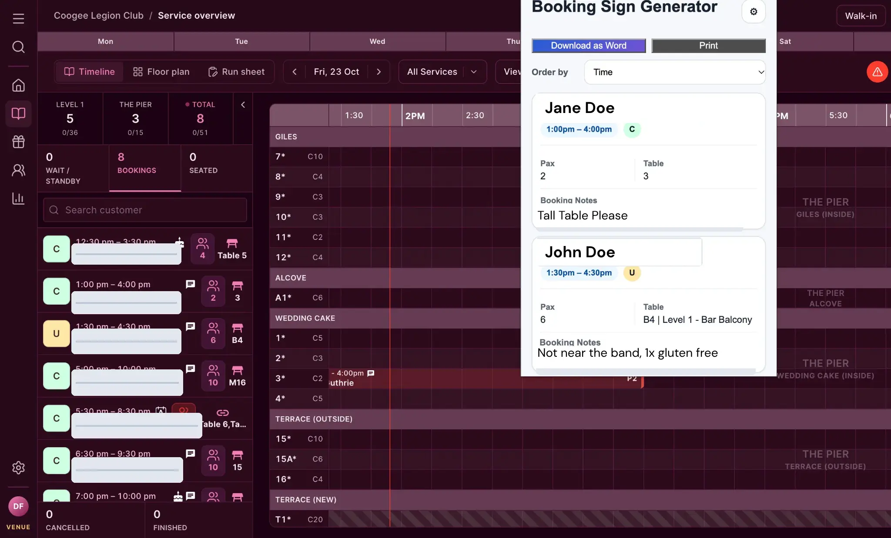
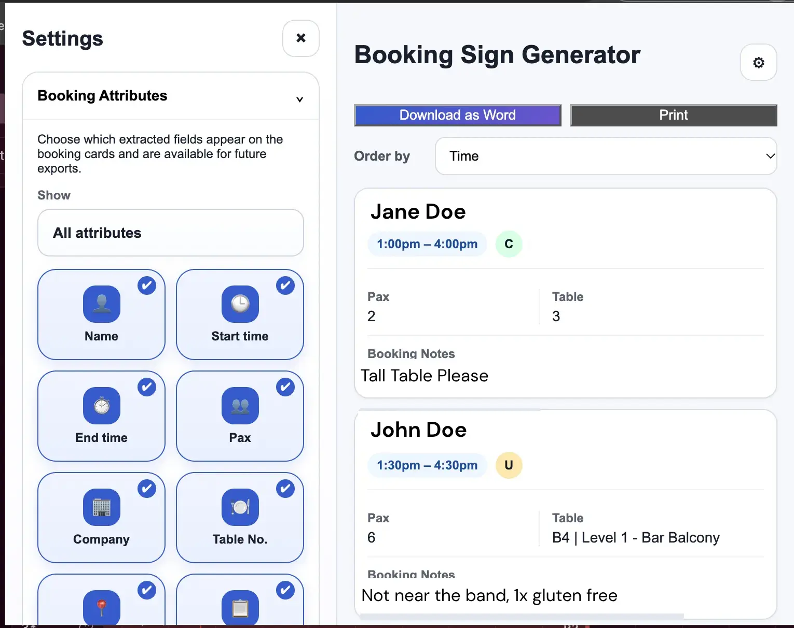
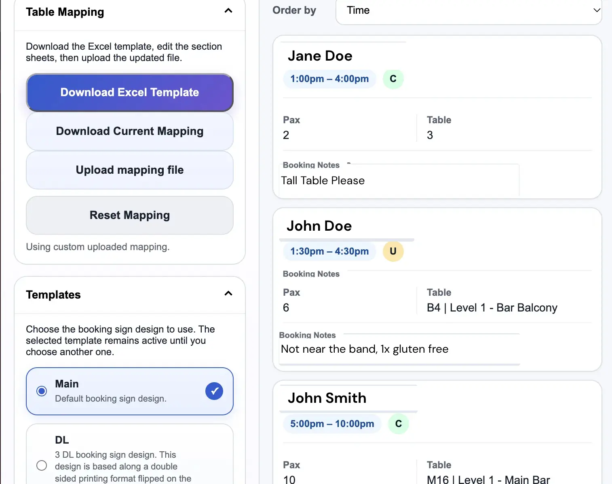
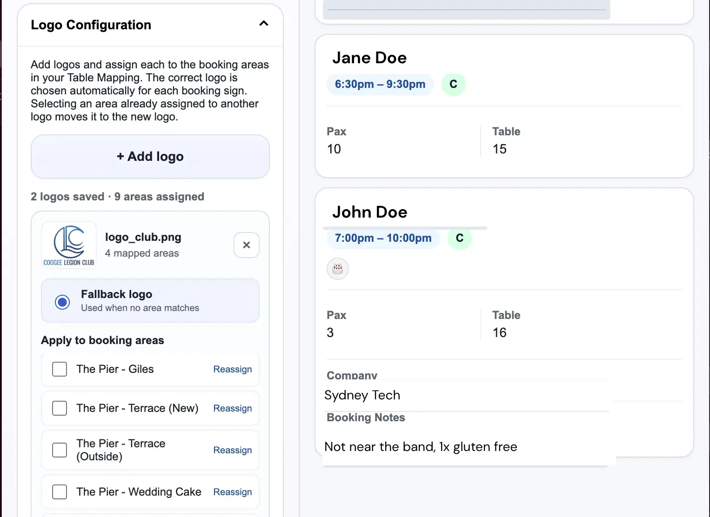
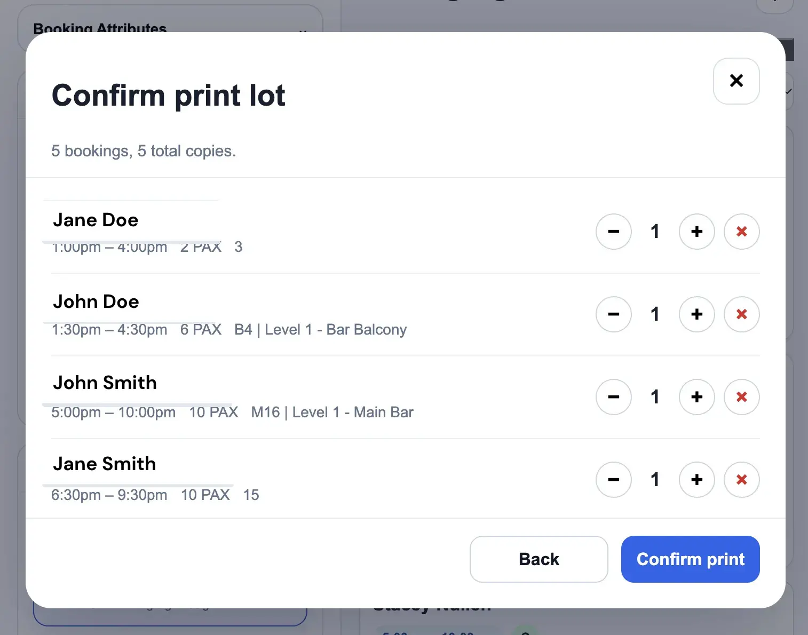

Selectable booking attributes
Choose which extracted details appear on booking cards and flow into output templates, so the interface stays relevant to the task.

Turning live reservations into print-ready booking signs, without copying the same details twice. A Chrome extension built around the day-to-day needs of a busy hospitality venue.
The extension sits alongside the booking platform, presenting extracted reservations as structured cards with printing and Word-document actions. No separate data-entry screen is needed.

The booking system already held the details staff needed: names, times, party sizes, tables and notes. Creating signage required those details to be transferred into a separate document workflow, introducing repeated work and opportunities for mistakes.
I built a browser extension to connect these workflows. Instead of replacing the booking system, it reads the information already on screen, organises it and turns it into reusable, configurable outputs.
The interface keeps common actions immediate while allowing staff to adapt templates, display fields and venue-specific mappings.
Capture relevant details from the existing booking interface.
Bring fields and booking statuses into a consistent format.
Resolve tables, layouts, selected fields and area logos.
Produce Word signage or a selected print batch.
Choose which extracted details appear on booking cards and flow into output templates, so the interface stays relevant to the task.
Download an Excel mapping template, update venue sections and upload the revised mapping to match real floor plans.
Switch between document layouts, including a DL format that supports multiple bookings on one printable template.
Assign different logos to booking areas and retain a fallback when no specific area matches, keeping signage consistent across venues.
These are screenshots of the working extension, not concept illustrations. Open any image for a closer look at the controls.




Customer identifiers and booking notes have been obscured in these portfolio images. The original screenshots are unchanged.
Integrating with third-party software is a different engineering challenge from building a standalone application. Changes in the host interface affect extraction, and a small document-formatting detail can affect a physical print workflow.
This project made reliability, user-centred configuration and incremental testing central to how I develop tools around real operations.